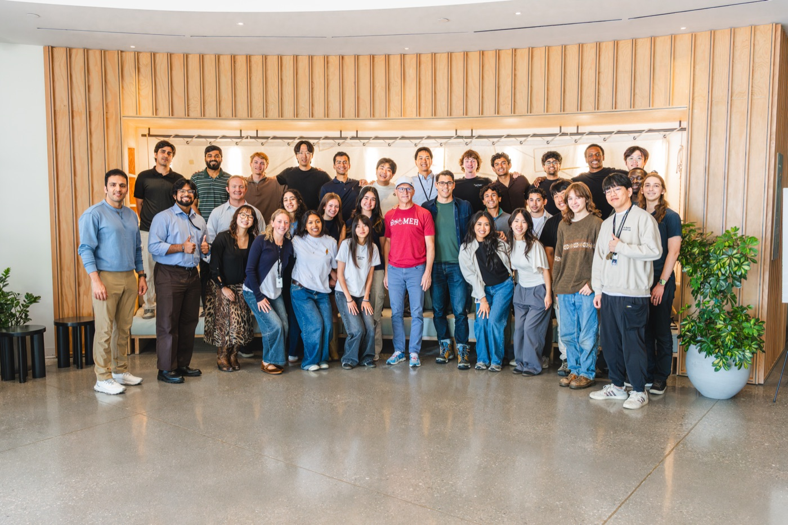
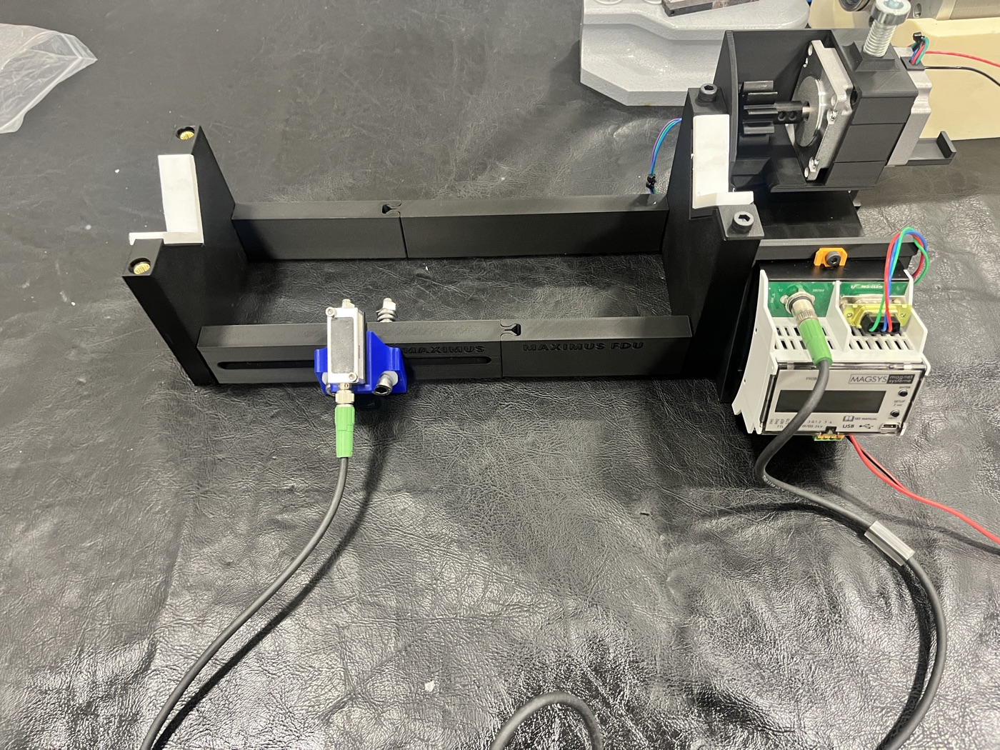
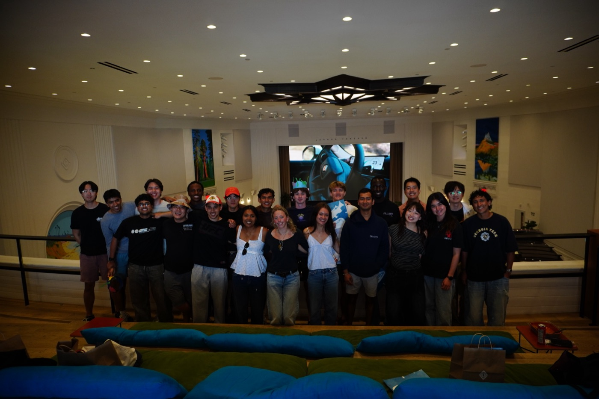

Overview
I worked as a Mechanical Design and Test Intern on Rivian's Motor Team, with scope that spanned the whole team — from thermal testing to controls test to root cause validation for the integration team. Day to day, that meant supporting thermal testing, running thermal cycling and high-speed/high-thermal tests, validating CFD models against test data, and running stator end-of-line and rotor state-of-health testing.
My biggest project of the summer was a full redesign of an electromagnetic flux mapping fixture capable of mapping the magnetic field around any rotor program. I owned the CAD and packaging design end to end, selected and integrated the electrical components, and built and validated the entire control state machine on the PLC.
Gallery


